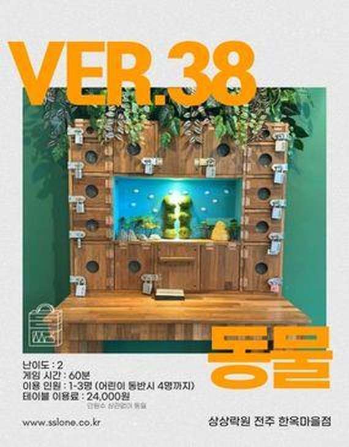
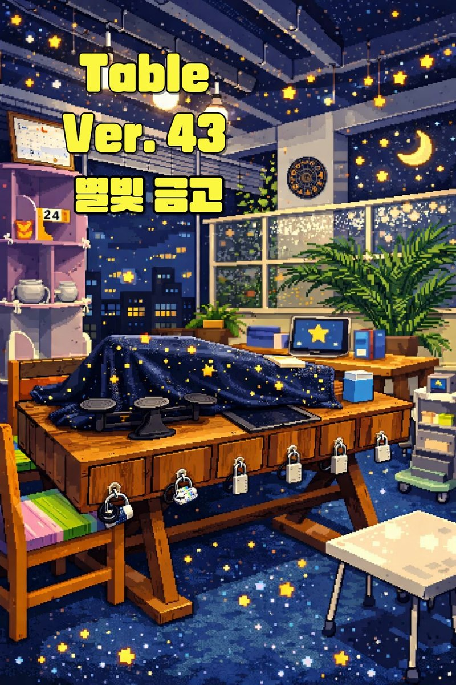
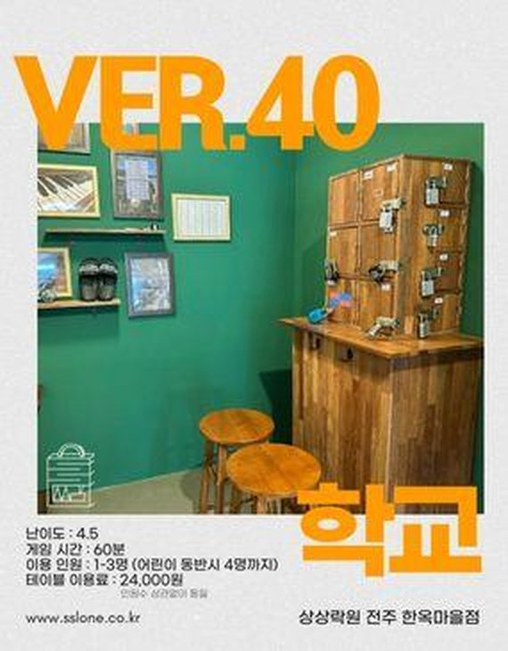

난이도 골라 담기
5 / 5
입문부터
4.5
까지

🔓 가볍게
2
잠실 Table ver.08 · 전주 한옥마을 ver.38 동물

🔐 꽉 찬
4
잠실 ver.43 별빛금고 · 익산 Ver.24 Radio · 전주 ver.41 우주

🗝️ 최고
4.5
전주 한옥마을 ver.40 학교
📌 저장해 두고 자물쇠 땡길 때
예약 전 공식 페이지에서 시간 확인
포스터: 상상락원 공식 · 난이도는 공식 표기(5점 만점)
방탈깍노트